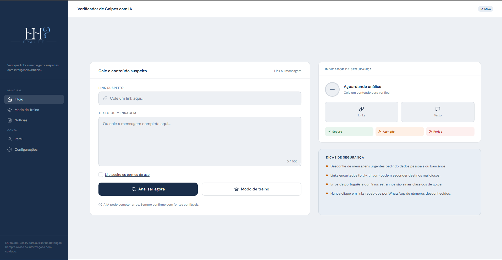
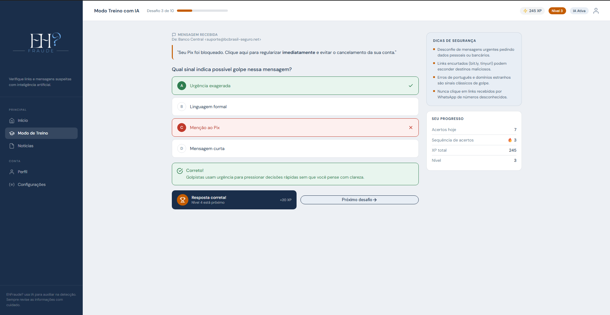
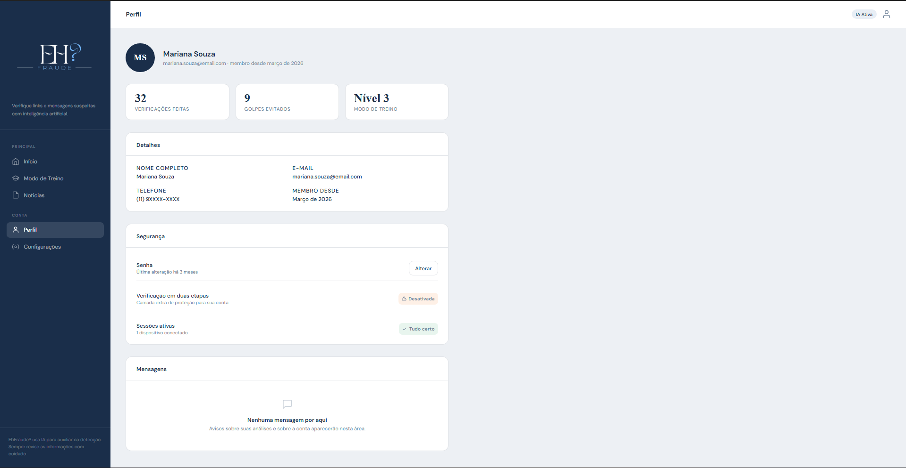

Descubra se é golpe antes de clicar.
O EhFraude? é um verificador de links e mensagens que usa Inteligência Artificial para classificar conteúdo como GOLPE, SUSPEITO ou SEGURO — e ainda treina você para reconhecer fraudes sozinho.
- 3 classes de veredito
- IA Llama 3.3 70B + fallbacks
- 100% treino gamificado

O projeto
Fraudes digitais crescem todos os anos no Brasil. O EhFraude? ataca o problema por dois lados: análise imediata e educação preventiva.
Objetivo
Reduzir o impacto de phishing, golpes via Pix, falsas centrais bancárias e engenharia social, oferecendo veredito instantâneo com explicação dos indícios encontrados.
Público-alvo
Usuários comuns de WhatsApp, bancos e redes sociais; pessoas com pouca familiaridade técnica; idosos e famílias que querem conferir uma mensagem suspeita antes de agir.
Educação preventiva
Além do veredito, o sistema explica por que aquilo é golpe e ensina, no modo treino gamificado, a reconhecer padrões de fraude sem depender de ninguém.
Funcionalidades
Dois módulos principais integrados ao mesmo painel web.
Detector com IA
Analisa links e mensagens e classifica como GOLPE, SUSPEITO ou SEGURO, com probabilidade de fraude calculada por critério acumulativo.
Veredito explicativo
Lista os principais indícios encontrados (domínio estranho, urgência, pedido de dados) e recomenda ações seguras antes de clicar ou responder.
Modo treino gamificado
Desafios inéditos gerados por IA, com XP, níveis, sequência de acertos, bonificação por velocidade e dificuldade adaptativa.
Notícias e dicas
Feed com casos reais e orientações de segurança para o usuário ficar um passo à frente dos golpistas.
Fallback de modelos
Se o modelo principal de IA falhar, modelos secundários assumem a análise automaticamente, sem derrubar o serviço.
Web responsivo
Interface desktop e mobile com a mesma experiência, publicada em hospedagem própria e versionada no GitHub.
Como funciona
Três passos até o veredito.
Cole o conteúdo
Envie um link ou a mensagem completa que você recebeu.
A IA analisa
O modelo avalia domínio, linguagem de urgência, pedidos de dados e outros indícios.
Receba a resposta
Veredito GOLPE, SUSPEITO ou SEGURO com explicação e recomendações.
Telas
Protótipos de baixa e alta fidelidade desenvolvidos para desktop e mobile.
Início — verificador e indicador de segurança

Modo treino — questão, feedback e progresso
Notícias — feed de casos e dicas

Perfil — configurações da conta
Tecnologias
Stack do projeto.
- HTML5
- CSS3
- JavaScript
- React (futuramente)
- Python 3.12
- Groq API
- Llama 3.3 70B
- Qwen (fallback)
- Git & GitHub
- Vercel
Equipe
Quem construiu o EhFraude?
Caio Figueiredo Santos
Project Owner e Desenvolvedor
Erick da Rocha Soares
Scrum Master e Desenvolvedor
Nicolas Geovane Baptista de Jesus
Desenvolvedor